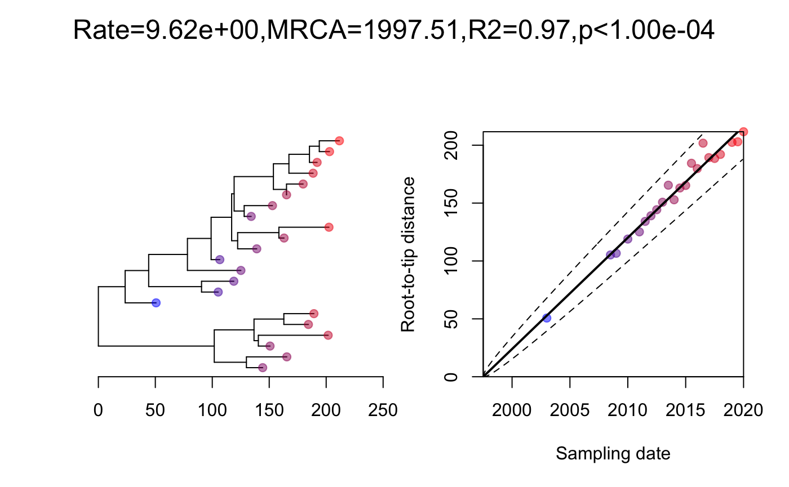

vignettes/clustered.Rmd
clustered.RmdIn this vignette we demonstrate the usage of the experimental clustered permutation test implemented in the command clusteredTest. Permutation tests are often used to measure the strength of a temporal signal, and in BactDating this is implemented in the command roottotip to calculate the p-value of the temporal signal. However, this test can be confounded by the presence of genetic structure and/or non-uniform sampling over time or lineages. To account for this effect, Duchene et al (2015) proposed a clustered permutation test, which was later refined by Murray et al (2016). In this test, a Mantel test between pairwise temporal and genetic distances is being used to assess the confounding effect. If this Mantel test is initially significant, but becomes insignificant after merging monophyletic clusters with similar dates (eg within a year), then this clustering is enough to eliminate the confounding signal. A clustered permutation test is then used to assess the strength of the temporal signal, in which dates are permuted between clusters only (ie each cluster always has the same date in the permutations).
The command clusteredTest is based on some of these same ideas, but does not exactly replicate the procedure described above. More details to follow.
We start by generating a simulated dataset:
dates=seq(2000,2020,0.5) phy=simcoaltree(dates,alpha=10) tree=simobsphy(phy,mu=10) plot(phy,show.tip.label = F) axisPhylo(backward = F)
Let’s try the clustered permutation test analysis:
res=clusteredTest(tree,dates)
